PCMGA Garden Walk - June 26
When you visit at this year's garden walk, in addition to labelling a lot of the interesting plants, throughout the property we've posted mini stories for you to read and learn. We're posting all the stories here as a blog post so you can read them on your phone. They are in order as you would see them if you walked counter-clockwise around the property from the parking lot.
The Sign
We don’t know who painted this sign or when it was erected, but it’s long enough ago that the metal framing is rusted through in multiple spots and the lettering is fading on the south side. We spent Easter morning 2020 repainting the black letters. A wind storm earlier this year required the addition of zip ties to hold it together.
When we first purchased this property in 2016, it was so overgrown that you couldn’t even see either side of this sign anymore. We didn’t even know it had anything on the north side until we cleared the area.
If anyone has any details about the history of this sign, or knows someone who can lovingly restore it, please talk to us.
What we know so far:
From a verbal conversation with Leroy, a 94 year old World War II veteran who lives nearby:
It’s always been here my whole life. (May 22, 2021)
From a conversation with the Porter County, Indiana - Genealogy and History Facebook page:
I've seen that sign many, many times. Unfortunately, I don't have any specific information concerning its history or the landowner that may have erected the sign. I would love to know its history, however. If you ever remove the sign, then please consider donating it to the Porter County Museum.
Also, where you live was commonly referred to as Gospel Corners prior to 1900. The name derived from the Gospel Corners Methodist Episcopal Church (sometimes called the Flint Lake Methodist Church) that was across 49 from your property. After 1900, it was more commonly referred to as Kinne's Corners. The Gospel Corner's church disbanded after 1867 and the church was razed before 1910.
(July 14, 2020)
So our best guess is that it’s well over 100 years old and was erected by members of the Gospel Corners church.
The Edge of Liberty Story
In 2016, we were asked to sign a petition to try to stop the rezoning of this property from rural residential to office park; hundreds of petition signers didn’t want to lose the rural feeling of Liberty Township. Along with dozens of our neighbors, we attended zoning meetings. But, while they seemed to commiserate with our concerns, no one on the zoning board could find a legal reason to deny the rezoning request. Since the property sale was contingent on the rezoning going through, we “fought city hall” by making an offer with no contingency, and the seller was all too happy to take our offer. He didn’t want to see it developed either. So, with a small real estate investment, we “saved the day” for our community (and our own property values).
But then we were faced with what to do with a four acre abandoned farm that was barely walkable and completely unusable. For the first year, it was just our own private ATV track and a place to walk our dogs. We invested in a brush mower to make walking trails and started discovering the potential of the property, but it was a losing battle. As soon as we cleared an area, it was quickly overrun with new growth.
This is when we started our journey in biomimicry and regenerative agriculture. The complex science of sheet composting with artistically spread layers of wood chips and hours of hard labor, along with the contribution of well over a thousand truck loads from nearly every tree service in the area, have transformed this property from eyesore to destination. Where once there had been invasive scrub brush growing in nutritionally depleted hardpan clay soil, there are now viable gardens growing in enriched soil with their own thriving ecosystems.
Our long term goal is to “retire” as professional farmers and we’ve been pursuing education from Purdue University to learn what we need to know to transition from gardener to farmer.
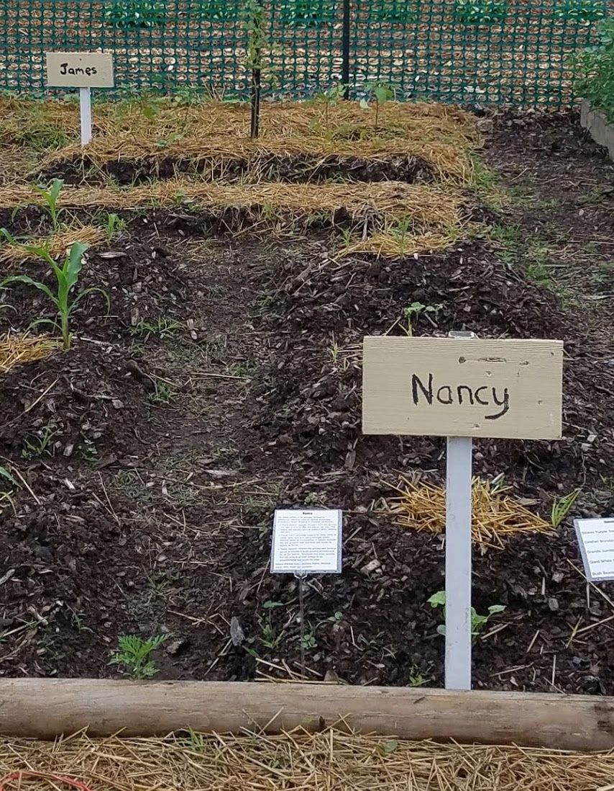
About Us
James & Nancy live in a home in an adjacent subdivision. There they have a tenth acre vegetable garden that was part of the 2019 Garden Walk. For a number of years, they have been selling produce from their home at a weekly farm stand with a “pay what you can, when you can” pricing model to help out their neighbors in need, while making sure that the excess from the garden they built to feed and educate their now adult sons doesn’t go to waste.
They moved to this area from Elkhart and Chicago respectively 25 years ago, and have fully embraced Liberty Township and its rural nature as their home. They want to see The Edge of Liberty grow as a destination enthusiastically supported by and in support of the community, loved by locals, and visited by tourists to celebrate life and create happiness.
You can learn more at our website https://edge-of-liberty.com or follow us on Facebook at https://fb.me/TheEdgeOfLibertyIN
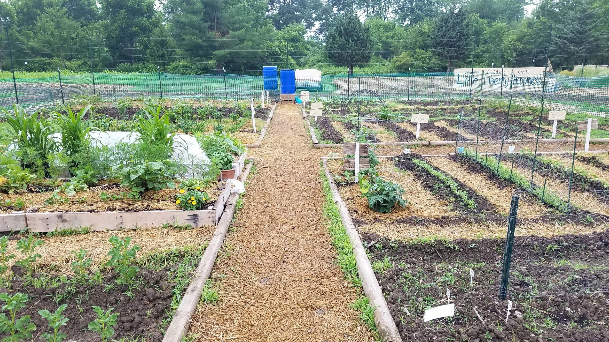
Community Garden
Since we purchased this property to preserve our rural community, it’s only right that we share some of it with the community.
This is our first season with a Community Garden at The Edge of Liberty. From our blog November 25, 2020:
While taking our daily walk around the property last week, I "convinced" my husband that a community garden in the middle of the turnaround hoop was the best use of the plot he's been amending with neighborhood leaf collection this fall. I put "convinced" in air quotes because he still has his doubts that it would be a successful endeavor, and is probably a little sad that it means 625 fewer delicata squash plants growing next season. I wasn't sure it would be successful either, but with one post on Nextdoor.com, within two days I had nearly all of the 16 plots claimed.
We subsequently decided to expand another 25 feet to the east to make 24 plots because online interest had been so encouraging.
The area was amended with leaves collected from a nearby neighborhood in the fall, and an additional 1200 cubic feet of compost in the early spring, before dividing up into 10x10 plots.
It’s especially challenging to manage a plot at this garden since we have no running water. Stewards must keep an eye on the weather and water by hand regularly. This past month has been tough on all of our gardens and our gardeners.
There is no charge for plots and the rules are simple - no chemicals, no perennials, no permanent structures, and no visitors except during Open Farm events. Stewards can keep what they grow, and are just asked to clear out by the end of October so we can amend the soil with leaf collection for next season.
Next: Exit at the gate and proceed to the Market Garden gate directly across the “street”
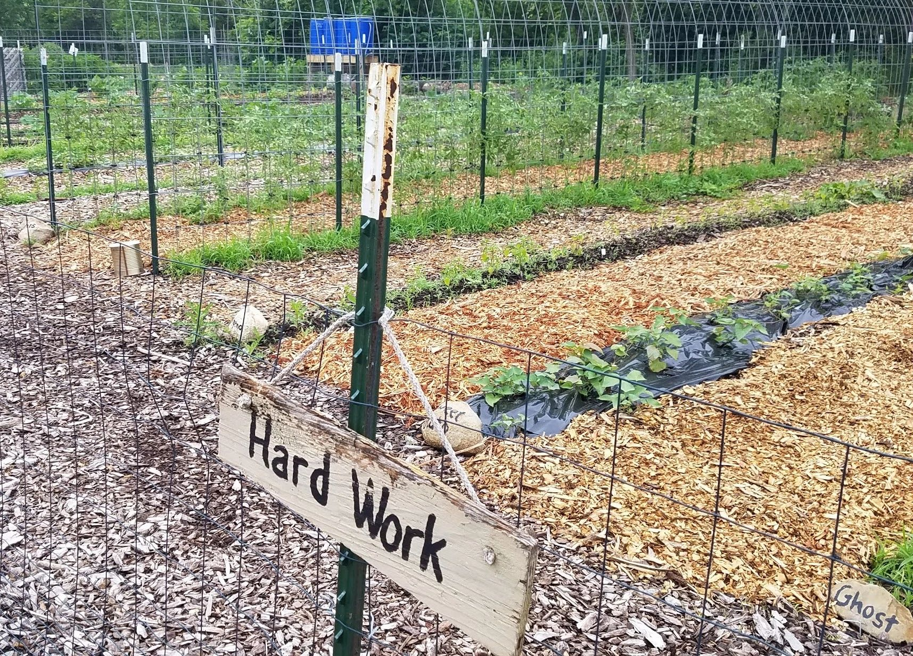
Market Garden
This fenced area has 22 forty-foot long rows planted with a variety of vegetables including asparagus, strawberries, four kinds of winter squash, sweet peppers, mini melons, zucchini/summer squash, five different chilies, slicing and cherry tomatoes, watermelons, kale, sunchokes, potatoes, garlic, rhubarb, cucumbers, ground cherries, and sweet potatoes.
This is our fourth year planting in this area, and each year has been an opportunity to learn from failure. Initially this area was overrun with grapevines, blackberries, russian olive, and sumac miraculously growing in lifeless soil as hard as a brick. After a year of clearing and adding wood chips to suppress weed growth, we tried our hand at growing a pumpkin patch. We planted too late in the season. The following year, we planted earlier and added a larger variety of squash, melons, watermelons, beans, and tomatoes...and fed the deer. Last year we invested in fencing to keep out the critters and were rewarded with drought. This year we invested in an irrigation pond to collect rain water and gravity fed drip irrigation. The lack of rain this year has been beyond frustrating as there’s been barely enough to keep the ecosystem in the pond thriving, so we’ve had to bring water from home nearly daily to replenish the barrels.
All the while, we continuously replenish the wood chips in the walking paths and their decomposition over the last five years has brought life back to the soil and helps with moisture retention.
Our long-term goal with this property is to make it a real, thriving business that we can manage after “retiring,” and at the center of it is this market garden. Short term, we’ll be selling produce from a farm stand here during Open Farm events the rest of the season.
Next: Exit on the west end near the strawberries to visit the Pollinator Garden
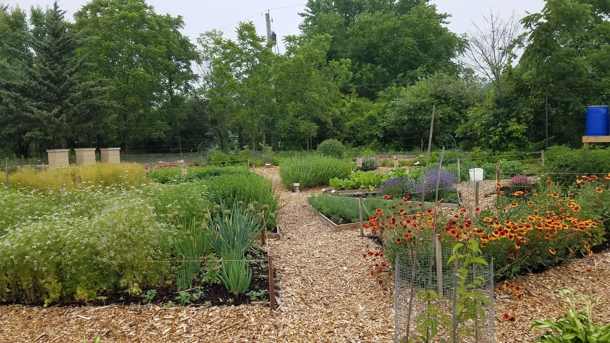
Pollinator Garden
2020 was a weird year, and everyone did crazy things to cope. Our pandemic project was this garden. The design is a 50x50 plot with two concentric hexagonal paths and four intersecting radial paths to create eight triangular raised beds and eight trapezoids that we could fill with flowering herbs and perennials that pollinators love.
As with the market garden, it was overgrown with invasives and the soil was hardpan clay. Early in the season we got a lot of rain and the paths we were digging held so much water that we nicknamed the area Atlantis. When it dried out enough to proceed, the soil was too hard to work.
We had to take shortcuts to finish the project and are paying for incomplete weed removal this year. In some cases, we’re embracing the weeds and taming patches of wild blackberries along the outer perimeter, and encouraging creeping charlie, monarda, goldenrod, and milk thistle on the west end. We also battle weeds of our own making, constantly rehoming volunteer sunflowers, chamomile, primrose, and last year’s hollyhocks.
All of the plantings are clearly labeled and can be viewed from the center of the garden. At the ends of paths not hosting a gate or a beehive are fruit trees (paw paw, Asian pear) grown from seed.
As for the bees, all of the hives here are currently empty. Keeping bees at our home was no longer viable with residential mosquito spraying services employed by a number of our neighbors, so we moved them here. Our colonies did not overwinter and we have not seen a single wild honey bee this season, even though this garden is teeming with other pollinators on a regular basis.
Next: Exit by the “back door” on the south end near the perennial onions and cilantro.
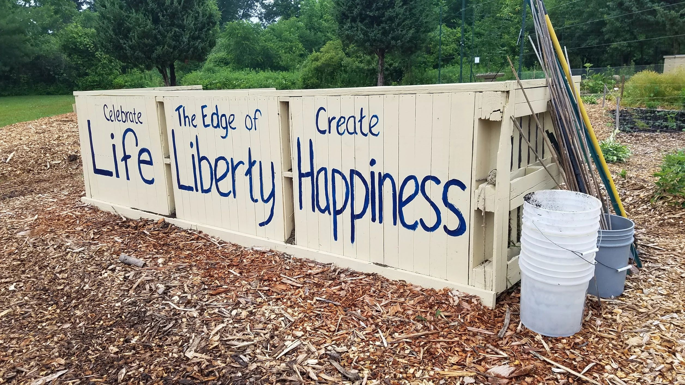
Compost
We’ve built a compost bin for use by our community gardeners as an easy place for them to dispose of weeds, plant refuse, and thinnings, and as a storage location for finished compost that they can use to amend their plots. The bin was built in early spring out of free pallets and reclaimed lumber all sourced on social media.
Since the bin is new this year, the finished compost provided was hauled in from the Valparaiso compost site managed by Porter County Recycling and Waste Reduction.
The majority of composting we have done on this property is sheet composting. We try to never leave any soil bare and use thick layers of wood chips to prepare areas for future garden plots. We try to plan three years in advance as it takes at least that long for wood chips to break down into gorgeous black gold soil.
The area just south of the pollinator garden is currently being prepared for an expanded orchard which will not be purchased and planted until after cicada Brood XIII in 2024. Currently our fruit production efforts have been limited to what we’ve planted in the outer perimeter of the pollinator garden, and attempts to prune back to health the established apple and pear trees on the property so that we can use them for root stock in future grafting projects.
Next: This is the last of the formal gardens on this property, but you’re encouraged to wander and explore the other three acres to see random plantings and native discoveries if you’re up for a long walk.
Take a ← left to return to your vehicle, a right → to continue the tour through shaded areas of reclaimed fruit trees, saved natives and marginally controlled invasives, or straight ahead to see the corn field and pond. Stay on the wood chip paths or mown areas to avoid poison ivy.
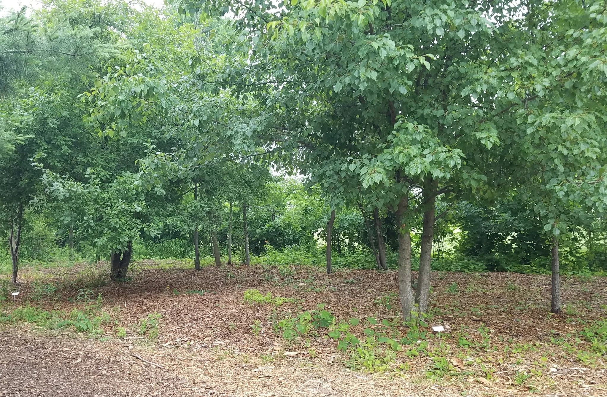
Fruit Trees & Vines
Our long term goal is to have a relatively healthy orchard on this property. Over the course of the last few years we have discovered - and saved from invasive vines - a number of crabapple and pear trees that we hope to be able to use as a base for that plan. This is the first year that we’ve seen heavy fruiting on any of them since they had spent years blocked from cross-pollinating each other.
As we’re clearing out the overgrowth on the property, and returning trees to health, we always give priority to anything that flowers and can help the pollinators flourish.
We have had some success starting Asian pears from seed, and one of our community gardeners has supplied us with fig and paw paw saplings that he was able to propagate.
Additionally this property is blessed with healthy Allegheny blackberries, some of them heavily fruiting on second-year wood since they’re in an area not recently cleared. Unfortunately, the property is also cursed with wild grape vines intent on killing trees and making nearly inedible grapes.
We attempted to self-teach grafting on some of the smaller crabapple trees with cuttings from our home, but all of our grafts failed. Likely we didn’t store our cuttings properly between collection and attachment, or we did not seal the grafts completely. Heavy winds in the early spring dislodged many of them. All of the scions dried out and died before they could connect.
We also hope to learn about air-layering to propagate some of the peach trees at our home before they reach the end of their twelve year life span. Air layering is a method of propagating new trees and shrubs from stems still attached to the parent plant. The stem is wrapped with damp moss to encourage roots to form.
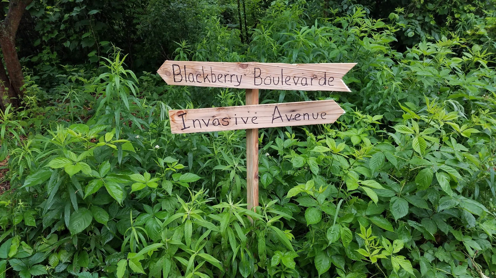
Native and Invasive
We’re always discovering new plants that grow here naturally and we do our best to give them space to flourish, even plants people normally consider weeds.
Some things we originally considered beautiful (autumn olive/Russian olive) we’ve since learned are invasives, while others that we had considered nuisances to be eradicated (goldenrod, blackberries) are native to the area.
Our top goal since acquiring this property has been eradicating the vines that are killing the trees. Whenever we find a tree worth saving, we clear the area immediately around it and then pile it high with wood chips. When we’re certain that the undergrowth is dead, we can pull the chips away from the tree to give it room to breathe. If you look up into the canopy of many of our healthiest trees, you can see the remnants of the vines that tried to kill them.
Our tree saving efforts prioritized evergreens first, followed by flowering trees for the pollinators, and then the black walnuts which are the largest shade trees on the property.
Whenever we intentionally bring in a non-native species (daylilies, hibiscus, iris), we do our best to control its spread with clear borders and seed pod control. There are a number of non-natives that were brought here by prior landowners that have since gone feral that we keep under control but don’t try to eradicate, like garlic and flowering alliums.
We still have a lot of work ahead of us to get the invasives under control and to save the native plants. We also still have a lot of learning to do to understand which is which and how to achieve our personal goals while still keeping in tune with nature.
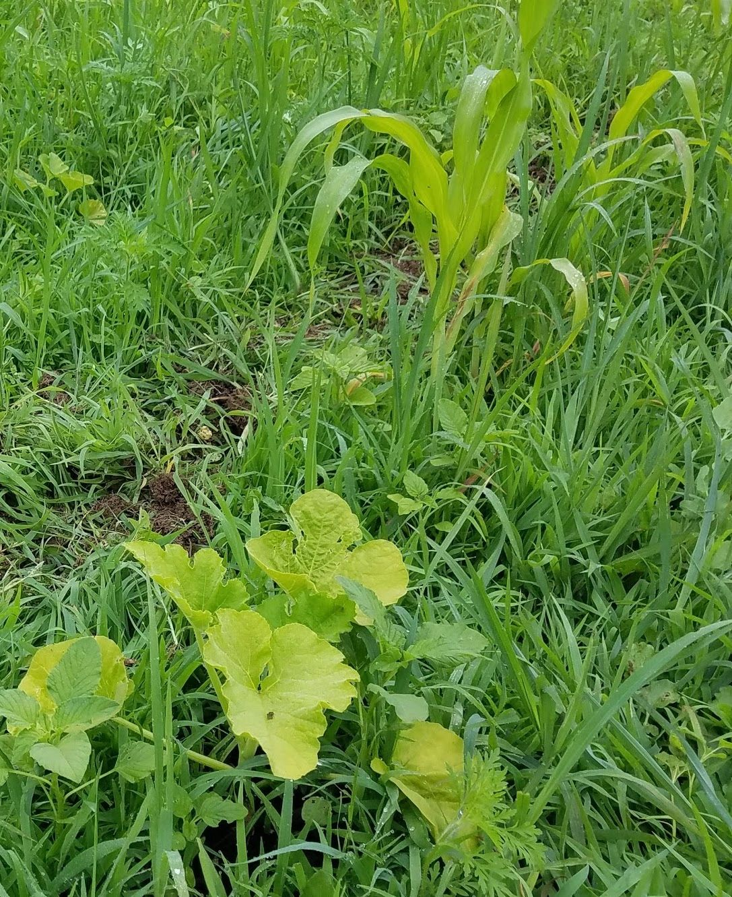
Three sisters
The three sisters is an ancient method of companion planting used by Native Americans throughout North America in multiple variations.
“Sister Beans” deposit nitrogen from the air into the soil, in a form that the plants can use. The beans will use the corn as support, so we needed to wait to plant it until the corn is about knee high. Because of our recent lack of rain, this was a very long wait.
“Sister Corn” provides support for bean vines to climb upon, and is a heavy nitrogen feeder. Planted alone as a monocrop, it rapidly depletes the soil of water and nutrients and needs its sisters to thrive.
“Sister Squash” shades the ground with its large leaves to provide a good growing environment for all the sisters. Raccoons and other animals find the texture of their foliage to be uncomfortable and avoid the area.
We set aside one plot in the community garden to plant the three sisters in the traditional mounding method with all three plants very close together as an experiment to see if it’s significantly different to the row method we employed here.
Here we’ve planted bantam corn, romano beans, and acorn squash. In early May we planted the corn in rows in a freshly tilled field. In late May we seeded the squash as a perimeter around the field. Once the corn was knee high, we seeded beans in alternate rows to feed the growing corn.
Because this garden is unfenced, it’s quite likely it will become deer food, but if it keeps their interest away from the fenced gardens it’s done its job.
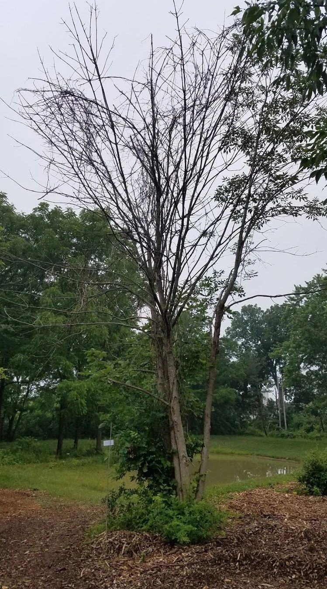
You Can’t Save Them All
This tree, like many others we’ve cut down on this property, was killed by invasive vines. No matter how pretty a vine looks climbing up a tree, cut it at its roots as soon as you can.
When vines get big and spread, they suffocate the tree. Their leaves block air and light from the bark, and the vine's roots compete with the tree for nutrients in the soil below it. The vines have hairs that clasp onto and attach themselves to the bark, which puts more stress on the tree.
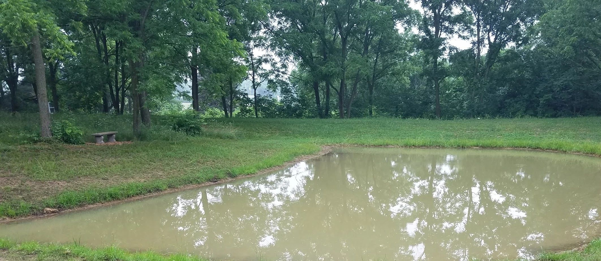
Pond
The property slopes to the southwest and all of our runoff was regularly flooding our neighbors yards and overflowing the retaining ponds in the Wild Rose subdivision. The graveyard just beyond our southwest corner was frequently under water.
Last August we had a rain catchment dug out with the south and west edges bermed to stop the flow of water that was making us bad neighbors.
Since the soil on this property is practically pure clay, it didn’t need to be lined to quickly evolve into a pond with its own ecosystem.
While it started out being little more than a large mud puddle used by birds to bathe and the occasional deer watering hole, it’s now home to a painted turtle (Nessie), three mallards (Fillmore, Mallory, and Maleficent), and about a million tadpoles. If it looks like the pond water is boiling, that’s just the baby frogs letting out air or water striders about to become lunch for the turtle.
Earlier this year, we planted irises, daylilies, and hibiscus just beyond the ridges and expect to have a gorgeous display of color next season. We also seeded the southern downslope with buckwheat to encourage deer browse over there rather than in our gardens.
We seeded the entire area with white clover for erosion control to keep the runoff from muddying the water. We regularly “treat” the water with bales of hay to modify the pH of the water to allow the suspended clay to settle out of it.
We believe Nessie and Mallory have laid eggs nearby, so please be careful and watch where you walk. The tadpoles are rapidly turning into tiny little frogs so try not to step on them.
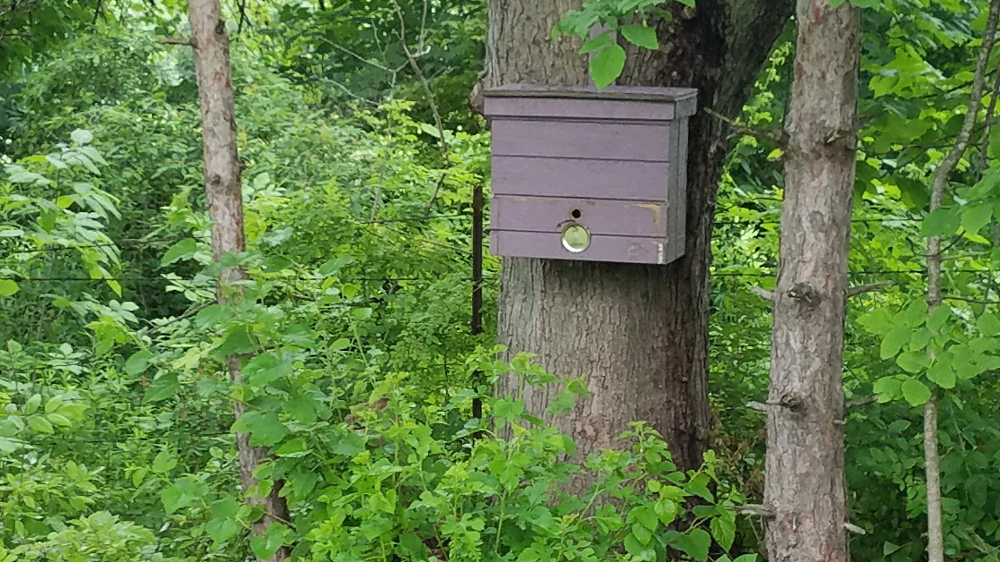
Bee Swarm Traps
Throughout the property you will see mauve colored boxes hanging from trees. These are baited with pheromone in an attempt to capture a feral swarm of honey bees. Captured local swarms have a better chance of survival in our winter weather than purchased packages, which usually come in from California or Georgia where they are used heavily in pollination services. Purchased bees are not adapted to our climate and are usually riddled with disease due to the poor management practices of commercial beekeepers and covered with pesticides and herbicides from the farming practices of their clients. Our success rate in prior years of capturing feral swarms has been quite good, but often we capture them too late in the year to get a young queen. The colonies that we’ve hived die out gradually as the old queen stops laying mid winter and does not maintain a large enough population to keep them all warm through to spring. We don’t consider ourselves beekeepers but pollinator allies and do whatever we can to encourage native pollinators to help our vegetables grow.
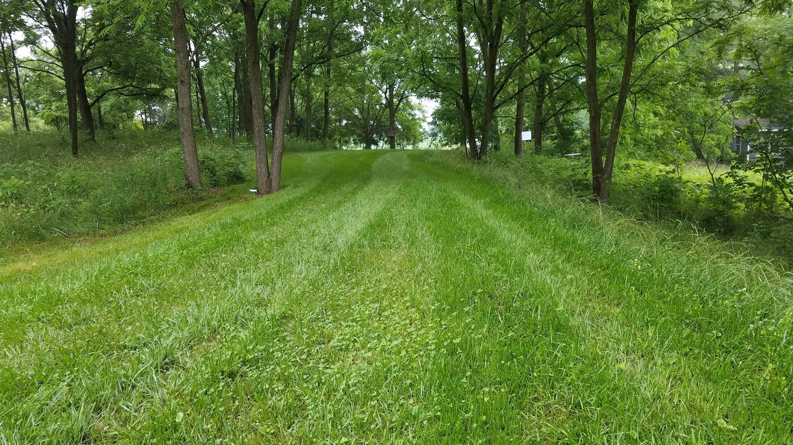
Rolling in Clover
In front of you is a gorgeous green lawn where less than a year ago was a bulldozed mass of dirt dug out from the bottom of the pond. A small miracle considering the lack of rain this spring and the fact the soil was 100% heavy clay.
The miracle’s name is white clover. We initially chose to plant it here for the small white flowers to attract pollinators, but as we watched it grow we researched and learned so much about this wonderful plant.
It’s a robust, resilient and competitive legume that builds soil by fixing nitrogen, which in turn feeds the surrounding grass making the lawn even more lush and green. It outcompetes weeds, withstands mowing very well, and holds up to heavy traffic - even deer. As a bonus, when you mulch mow it, the leaves contain so much moisture that it effectively waters the surrounding grass.
White clover has a very thick root system that breaks up and prevents soil compaction, even in our heavy clay. The extensive root system controls erosion and keeps our pond from getting muddier after a rain.
More importantly, it’s incredibly drought-tolerant and requires no additional watering.
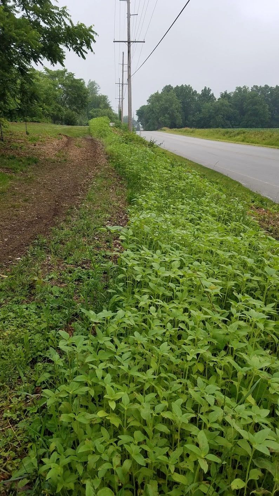
Sunflowers
Young sunflowers follow the sun through their travels from east to west, and overnight turn their faces east to wait for the rising sun. It’s a myth that they look at each other on cloudy days (but it does make a lovely meme).
Mature sunflowers stop tracking the sun once their stems firm up and face east all the time. Bees and other beneficial insects love warmth, and blossoms that face east in the morning attract five times more pollinators than those that don’t.
We like that they face east because we’re on the west side of Calumet, and we like to create a little bit of happiness for the commuters who pass us every day.
This massive wall of sunflowers is 250 feet long and is comprised of gray striped mammoth sunflowers that we’ve been saving seeds from for the last 20 years.
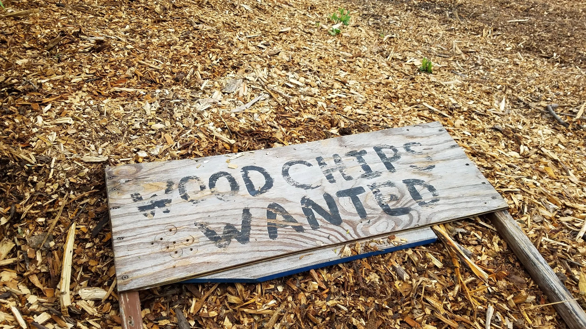
Biomimicry
Biomimicry studies nature's models and imitates them or uses them as inspiration for designs or processes with the goal of solving human problems. The problem we had here was lifeless, dry soil and persistent weeds.
We could have just bulldozed everything flat and tilled, but that would be lifeless and boring and do very little for soil health. We chose instead to mimic the conditions of the forest floor, heavily covered in organic material and teeming with life.
What we do here is a little more involved. It’s a little bit science and a little bit art, and with a lot of our own labor and the contributions of many tree services in the area - almost completely free.
You need an artist’s eye. You need to be able to envision what it will look like in the future. As the chips break down into compost, it changes the grade of the land. You have to picture how water flows and direct it to where it’s wanted and away from where it’s not. You’re nature’s interior designer, creating rooms with wood chip borders. You’re a curator framing nature’s art with wood chip frames. You’re a choreographer leading future visitors to all the destinations you created with beautifully curved paths.
As a scientist, you have to know what each load of wood chips you have delivered will do. If you get it in the spring or summer and it’s full of green leaves, it will break down rapidly and generate heat - this is the perfect load for piling on an invasive tree stump or weed patch to “burn” it out. But you have to be careful not to lay it on too thickly so it doesn’t turn to ash. Hardwoods break down more slowly than softwoods, so you have to adjust thickness and uniformity to compensate. Pine will lower soil pH - great for a first application on top of alkaline clay, but not something you want near your established gardens unless you’re growing something acid-loving. Black walnut is poisonous to many plants, but it’s beautiful and long wearing and perfect for paths.
We’re building a whole ecosystem and when applying mulch you have to keep in mind the effects you're going to have on that life-filled soil. It’s more than just dumping wood chips.
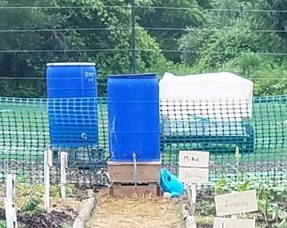
Watering Systems
In the market garden we have four water barrels connected in series feeding into a gravity fed drip irrigation system from DripDepot.com. The last barrel has a vermicompost “tea bag” for fertilizing. The community garden uses two barrels and gardeners come regularly to water their plots with a watering can. Eventually these barrels will be filled with rainwater collected in the pond, but as the pond still doesn’t have the depth to support draining, we’ve been bringing in water from our well at home less than a mile away.